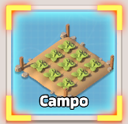

Centro Tecnológico
Centro Tecnológico Guarde tarefas de radar
Guarde tarefas de radarSegunda (Treino de Radar)
 Use Vigor
Use Vigor Complete tarefas de Radar
Complete tarefas de Radar Use Dados do Drone de Batalha
Use Dados do Drone de Batalha Use Peças de Drone
Use Peças de Drone Use EXP do Herói
Use EXP do Herói Colete Ferro
Colete Ferro- Colete Alimento
 Colete Moeda
Colete Moeda
Comece as coletas domingo para que o fim delas aconteçam na segunda
Terça (Expansão da Base)
 Despache Caminhão Lendário
Despache Caminhão Lendário Execute Tarefa Secreta Lendária
Execute Tarefa Secreta Lendária Termine Construções
Termine Construções Use Aceleração de Construção
Use Aceleração de Construção Use Cartões de Recrutamento de
Sobreviventes
Use Cartões de Recrutamento de
Sobreviventes
Quarta (Era da Ciência)
 Abra baús de componentes de drones
Abra baús de componentes de drones Termine Pesquisas
Termine Pesquisas Use Aceleração de Pesquisa
Use Aceleração de Pesquisa- Complete tarefas de Radar
 Faça pesquisas com Medalha Valor
Faça pesquisas com Medalha Valor
Quinta (Treinar Heróis)
- Use Bilhete de Recrutamento Lendário
- Use EXP do Herói
 Use Fragmentos de Heróis
Use Fragmentos de Heróis Use Medalhas de Habilidade
Use Medalhas de Habilidade
Sexta (Mobilização Total)
- Complete tarefas de Radar
 Use Acelerações (Construções, Pesquisas e
Treino)
Use Acelerações (Construções, Pesquisas e
Treino)
- Termine Construções
- Termine Pesquisas
 Treine Unidades
Treine Unidades
Sábado (Destruidor de Inimigos)
 Use o Escudo para não ser atacado (loja da aliança)
Use o Escudo para não ser atacado (loja da aliança)- Despache Caminhão Lendário
- Execute Tarefa Secreta Lendária
- Use Acelerações (Construções, Pesquisas,
Treino e
Cura)
Ataque bases do servidor rival
Bases da aliança rival dão pontos extra
Clique na aba Assalto da Aliança e depois em Ataque